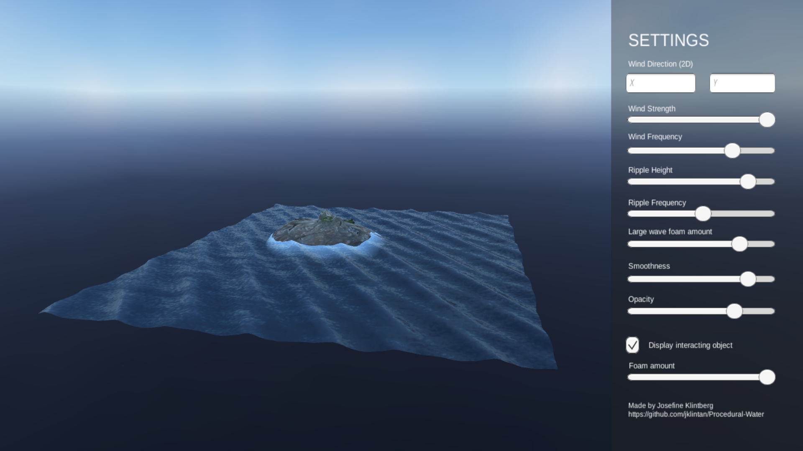

Summary
This is a completely procedural shader implemented in Unity using HLSL, implemented as a course project (3 ECTS) in the course 'Procedural Methods for Images' at Linköping University. Procedural generation of images is a versatile and often used tool in modern computer graphics. The course aims at giving a deep and general knowledge of classic and modern methods for procedural generation of images, particularly textures meant to emulate complex and visually detailed phenomena in nature.
With the sole use of mathematical equations, a surface shader are built and attached to a plane which gives the impression of a ocean. With different parameters available for the user, the ocean can change shape and appearance. The approach used is a combination of displacements in the vertex shader, surface noise and some lighting effects in the fragment shader as well as using depth for creating foam around objects.
The resulting shader has been built both as a stand-alone feature in Unity and also combined into a demonstration scene and published online using WebGL.
Technical Walkthrough
The use of procedural methods is important when it comes to coding for computer graphics and when creating simulations. By simulating complex systems in procedural ways, we can lower memory cost and achieve a faster simulation speed, textures that have memory cost can be replaced by equations and by this also being more easy to change for further use. The focus of this project was to use only procedural methods to code and generate a shader that simulates an ocean.
Large wave displacement
The first thing that was implemented in the project was the displacement to create large waves. The calculations for this was performed in the vertex shader. The first thing to do was to make sure the displacement worked and could be animated. Therefor, the first implementation contained the simplest wave shape, a sinusoidal wave.
When successfully added the displacement, it was seen that sinusoidal waves hardly creates a realistic appearance of waves. Sinus waves move only up and down but real waves instead move both backward and forward as more water fills up underneath the top waves. The focus is still on keeping the simulations as simple as possible but a further extension of taking the displacement from sinusoidal waves into trochoidal waves are made. A trochoidal wave describes a progressive wave which creates sharper crests and flat throughs.
The next step of creating more realistic waves is to add multiple trochoidal waves to the scene. In the real world, a single and uniform wave are hardly ever seen. Instead multiple waves with slight different phase speed and height act together in an ocean. Therefor the calculations for a trochoidal wave are taken out of the vertex shader and instead implemented as a function that returns the correct displacement and normal calculations. The waves have a slight difference in direction and phase from each other and creates together a much more realistic appearance.

Small wave displacement
The next step was the implementation of small waves, the ripples across the surface. The full effect of this was done by both an additional displacement of the vertices in the vertex shader and also some addings in the fragment shader.
I returned to a simple plane without the large wave displacement to easily being able to see the adjustments. The plan for the small waves was to add noise to the new calculated vertices after the large wave displacement, and to then add noise to the height (y-coordinate) in the normal direction. The noise used for the displacement are all included as separate cginc files from github.com/ashima.
I struggled a lot with not getting that cloud-like feeling of the noise that I aimed for and realized that the frequency and especially the level of detail of the noise needed to be adjusted. Therefor a function that adds series of Perlin noise with different octaves was implemented. The function creates a 2D noise pattern but uses a 3D noise function for being able to animate according to the time. The multioctave noise function was tested in the fragment shader as output for the color to being able to visualize if the pattern was the one aiming for.
The resulting ripples along the surface are a combination of noises with different octaves. The noise has a time-parameter that creates an animated movement up and down for the ripples. The result for the plane without influence of the large wave displacement can be seen in the images below. With an extension of letting the number of octaves and amount of displacement be driven by the user as properties in the shader, the resulting ripples could be integrated with the large wave displacement and together, the two displacements creates a much more appealing perception of the water.
Foam
The two displacements together creates a rather good appearance of an ocean. The next step is to move over to adjustments in the fragment shader. One big improvement for realism is to add foam to the ocean. Water in an ocean splashes around and creates foam, as well as foamlines and depth perception around the shallow parts of a water mass.
To simulate the foam that occurs around objects in the water and along the shoreline, a gradient is added that is controlled by the depth of objects under the water. To be able to use the depth values, the camera depth texture are used. To being able to read the camera’s depth texture, and by this determining how far each vertex is from the camera, it is needed to enable the depth texture for the camera.
The depth value texture is then sampled for each vertex’s screenposition. It exists a number of depth texture shader helper macros in Unity and after the texture is sampled, the corresponding eye space depth are calculated using the LinearEyeDepth helper macro. The eye depth are calculated in the vertex shader and added as an attribute for each vertex to being able to send this to the fragment shader. After making sure the depth texture exists, the gradient are calculated. Finally, a check if the current vertex is inside the fading are and should be colored with foam or not and colored if it is. Since the water could be infinite deep, this fading limit flag has been added.

Another aspect of the large waves in reality is that it forms foam on top of the waves and also a breaking of the waves since the top of the wave travels at a greater speed. The height foam is implemented by looking at the y-coordinate of each vertex. If it is above a certain limit, foam should be added
As with the shoreline foam, a gradient is implemented and further more, a multioctave noise is added as well. This noise is added to the gradient in such a way that only the light parts of the noise are added, in order to create a foam-like appearance.
For creating an even more realistic ocean, more emphasized foam could have been added but I thought that the influence of the gradient noise created a nice additional realism in the scene and when testing different amounts of noise I found that it easily went over to an almost cartoon impression when too much.
Lighting
The shader was implemented as a standard surface shader that uses a local light model. Even though the light model was quite sufficient in some aspects, I wanted to add some features for creating an even more realistic ocean.
The lighting effect that I started implementing was the Fresnel effect. This effect simulates reflections on a surface. When the viewer looks at the surface from a steep angle, it will get less reflections compared to when looking from a shallow angle. This means that for the ocean, there should be more reflections from the light in the distance and less close by. I implemented this effect in the fragment shader by first finding the view direction, that is the normalized vector between the camera’s position and the screenposition for the current vertex, and then calculating the angle between each normal and the view direction. Finally a smooth value is calculated by using a step function and interpolation with a user defined value for the influence of the effect.
Parameterization
The final thing performed for the actual shader in this project was to merge the different properties available for the user in a good way. It is not so intuitive for everyone how to interact with the large waves according to amplitude and wavelength, instead an approach of parameterization was used to change the wave height and steepness according to the wind.
For this, a wind direction vector was added as a property and the trochoidal wave function was given an extra input parameter that was the direction of the wave. This enables a user to change the wavedirection.
Additionally, the wave height are described with the use of the property wind strength where a higher wind strength creates larger waves, and the amount of waves are described by the property wind frequency. This allows for the user to both create a stormy ocean with large waves but also a windy ocean with lots of small waves. To avoid the issues with looping, a third trochoidal wave is only added if the wave strength are below a certain limit.
The shader is interactive as it is with properties that allows a user to create different effects and the ocean they are aiming for but I wanted to create a demonstration of the shader online as well. To do this I created an additional demo scene where I added a graphical user interface with sliders for inputs and connected them to the shader with a simple C# script. I then built this scene for WebGL and uploaded it in connection to my Github repositry for the project.
Since the shader has lots of different properties and I wanted to avoid a GUI that was too clustered, I excluded the possibility for choosing color and the influence of the Fresnel effect but as mentioned before, they are all available when using the shader itself in Unity.
In conclusion, a completely procedural shader was successfully implemented and fulfills its goal of simulating an ocean in a realistic and efficient way. Obviously it exists many additional features that could be added, such as particle systems for simulating water splashes on top of the waves or when hitting objects in the ocean, but that moves away from the procedural aim of this project and will be a possible continuation in order to turn the project into a complete ocean tool for Unity.